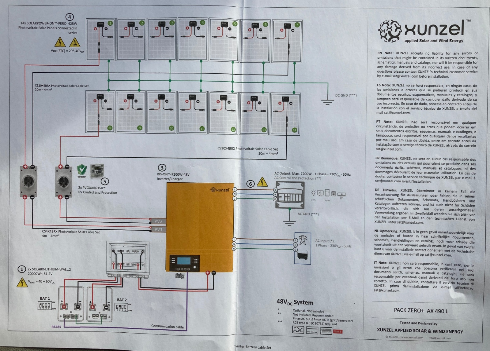

How do we get data out of the inverter
November 23, 2026
About 6 months ago we installed our solar kit we bought in Leroy Merlin Portugal. The Xunzel PACK ZERO+ AX 490 L solar kit. I was really surprised with the kit's easy installation and manual it came with. Ikea style, step by step. This cable first, put it in that place. I included the overview.

After everything was installed and was up and running, I wanted to find out how good it was charging, when it was charging how much power we use. But an inverter is an inverter and not a data logger. So how do I log the data? This inverter has a wifi module, that's good right? Nope ... the wifi is on and I can't turn it off. Even worse, I can't reach it without installing the app WatchPower AND connect the inverter to the internet. Why? Because the inverter is setup to talk to a cloud, push the data and the app reads the cloud. Convenient, right? Well ... What part of off-grid did they forget when creating this ... We want direct data without internet. Trying to find more info on the internet, it seems like we are not the only ones who have concerns with WatchPower's software.
So next step, email Xunzel to ask how I can reach the internal web service using the wifi. I got an answer, but not the one I had hoped for: "This inverter does not have an internal web interface." Darn, nothing to work with. BUT the inverter also has a RS-232 port and has an RJ45-to-DB9 cable in the kit. So clearly one should be able to communicate with the inverter over RS-232 ... Nothing about the protocol in the manual, on the website or on the internet.
Now we're talking baby!
I've put the whole protocol on GitHub, so you can use it too: https://terramadas.github.io/Xunzel-RS232-Protocol/
Next: making the system that will collect the data.